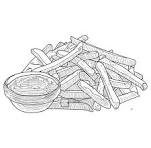

Fries

Description
Fries (or French fries) are thin, stick-shaped pieces of potato that are deep-fried or baked until golden and crispy on the outside, soft on the inside. Often served with salt, ketchup, or mayonnaise.
Ingredients
- Potatos
- Vegetable oil (for frying)
- Salt
- Optional: paprika, garlic powder, herbs
Steps
- Peel and cut the potatoes into thin strips.
- Soak them in cold water for 30 minutes (optional for extra crispiness).
- Dry the potatoes thoroughly with a towel.
- Heat oil in a deep pan or fryer to 175°C (350°F).
- Fry the potatoes in batches until golden and crispy (5–7 minutes).
- Remove and drain on paper towels.
- Sprinkle with salt and optional seasonings.
- Serve hot with your favorite sauce.
Home